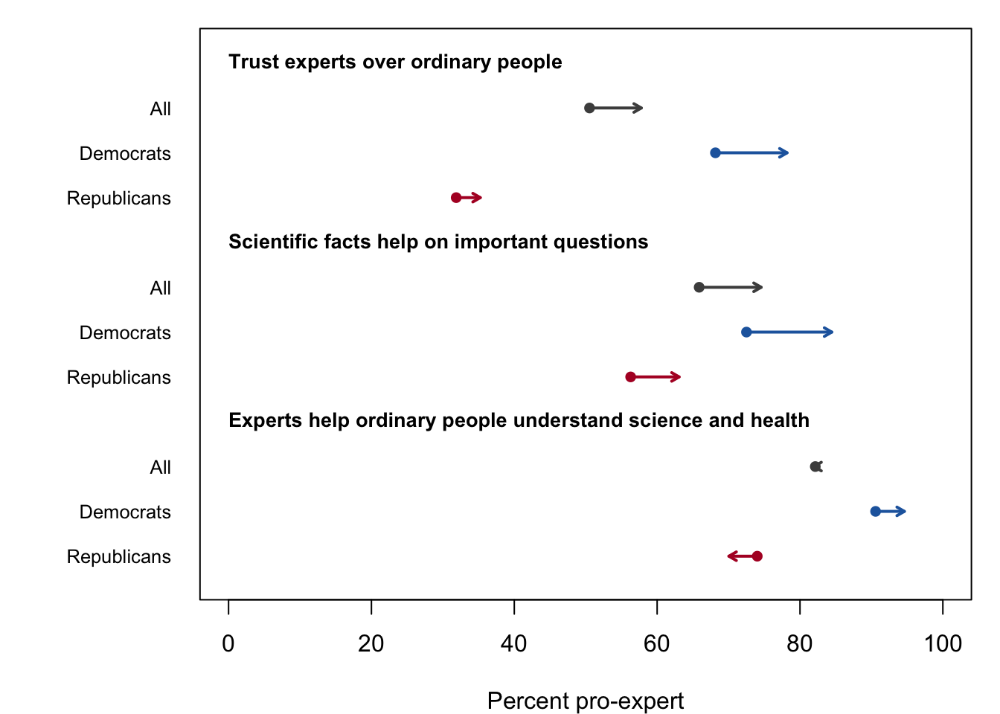
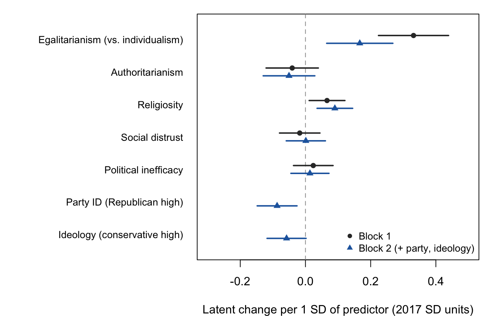

weight_allpanel_2020Nov). Democrats and Republicans include leaners.

Figure 1 shows the percentage of panel respondents giving the pro-expert response to each item in 2017 and November 2020. Trust in experts increased on two of the three items. The share disagreeing that they would rather trust ordinary people than experts rose from 51 to 58 percent, and the share disagreeing that scientific facts do not help on important questions rose from 66 to 75 percent. Gains on both items were larger among Democrats than among Republicans.
The item on experts helping ordinary people understand science and health followed a different pattern. Overall agreement was essentially unchanged (82 percent in 2017 and 82 percent in 2020). However, agreement among Democrats rose from 91 to 95 percent while agreement among Republicans fell from 74 to 70 percent, widening the partisan gap from 17 to 25 points.
Before modeling change, I tested whether the three items measure expert trust the same way in both waves. As shown in Table 1, constraining thresholds, loadings and intercepts to be equal across waves produced only small changes in fit (CFI = .998, RMSEA = .034). The scaled chi-square difference tests were significant, which is likely given the size of the sample. I therefore treat the expert trust measure as invariant over time. In the unconditional latent change model, expert trust increased by 0.32 standard deviations (in 2017 units), and its standard deviation grew from 1.00 to 1.28. Expert trust was stable at the individual level (r = .85), but the increase in variance indicates that respondents moved apart over the period.
weight_allpanel_2020Nov). Democrats and Republicans include leaners.

| Model | χ² | df | CFI | RMSEA | SRMR | Δχ² | Δdf | p |
|---|---|---|---|---|---|---|---|---|
| Configural | 9.23 | 5 | 1.000 | 0.018 | 0.006 | |||
| Thresholds | 10.69 | 8 | 1.000 | 0.011 | 0.006 | |||
| + Loadings | 33.81 | 10 | 0.999 | 0.031 | 0.008 | 15.87 | 2 | < .001 |
| + Intercepts | 47.52 | 12 | 0.998 | 0.034 | 0.009 | 13.43 | 2 | .001 |
Table 2 reports the baseline and change models. As expected, egalitarianism was strongly associated with expert trust in 2017 (β = 0.68). Religiosity (β = -0.18) and political inefficacy (β = -0.21) were associated with lower expert trust, social distrust had a small negative association (β = -0.05), and authoritarianism was unrelated to expert trust. These associations changed little when party ID and ideology were added. Neither party ID nor ideology was associated with baseline expert trust net of the values and civic orientations.
Egalitarianism was also the primary predictor of change. In the conditional change models, egalitarianism was associated with higher expert trust in 2020 after accounting for expert trust in 2017 (β = 0.35 in Block 1 and 0.22 in Block 2). The latent change models show the same pattern. As shown in Figure 2, a one standard deviation difference in egalitarianism was associated with 0.33 standard deviations more growth in expert trust in Block 1 and 0.17 in Block 2. Because the average increase was 0.32 standard deviations, respondents one standard deviation toward the individualist end of the scale gained approximately no expert trust over the period.
Religiosity had a small positive association with latent change (0.07 in Block 1 and 0.09 in Block 2) but was not significant in the conditional change models. This is likely because religious respondents had lower expert trust in 2017, and the latent change model does not adjust for starting levels. Authoritarianism, social distrust and political inefficacy were not associated with change in either model.
Party ID was associated with less growth in expert trust (-0.09 standard deviations per standard deviation of party ID), and ideology had a negative association that was significant in the conditional change model (β = -0.05) but not in the latent change model (p = .058). Adding party ID and ideology reduced the egalitarianism coefficient by about half, but it remained significant (p = .001).
| Predictor | Baseline B1 | Baseline B2 | Conditional change B1 | Conditional change B2 | Latent change B1 | Latent change B2 |
|---|---|---|---|---|---|---|
| Egalitarianism (vs. individualism) | 0.68*** | 0.65*** | 0.35*** | 0.22*** | 0.45*** | 0.24** |
| Authoritarianism | -0.04 | -0.04 | -0.04 | -0.04 | -0.06 | -0.07 |
| Religiosity | -0.18*** | -0.19*** | 0.02 | 0.04 | 0.09* | 0.13** |
| Social distrust | -0.05* | -0.06* | -0.02 | -0.01 | -0.02 | 0.00 |
| Political inefficacy | -0.21*** | -0.20*** | -0.01 | -0.02 | 0.03 | 0.02 |
| Party ID (Republican high) | 0.01 | -0.07** | -0.13** | |||
| Ideology (conservative high) | -0.01 | -0.05* | -0.08 | |||
| Expert trust, 2017 | 0.58*** | 0.62*** | ||||
| N | 2522 | 2447 | 2522 | 2447 | 2522 | 2447 |
| CFI | 0.972 | 0.906 | 0.972 | 0.906 | 0.972 | 0.906 |
| RMSEA | 0.050 | 0.047 | 0.050 | 0.047 | 0.050 | 0.047 |

Table 3 reports models for single trust items. Egalitarianism was associated with increases in each of the three expert items (β = 0.38 to 0.52) and with higher confidence in the CDC in 2020 net of expert trust in 2017 (β = 0.31). The association was weaker for trust in the federal government (β = 0.23). Egalitarianism was associated with declines or no change in confidence in the Supreme Court (β = -0.16), big business (β = -0.09) and the military (β = -0.03). Value-based change was therefore larger for experts and science than for government and other institutions.
However, egalitarianism predicted change in media trust before the pandemic (β = 0.35 from January to November 2019) about as strongly as during it (β = 0.41 from November 2019 to November 2020), although the two windows differ in length. Egalitarians and individualists were already diverging in their trust of information sources before COVID-19, and the change in expert trust likely reflects, in part, a trend that predates the pandemic.
The civic orientations show a different pattern from the values. Political inefficacy was associated with declines in the experts-help item (β = -0.10) and in media trust in both periods (β = -0.08). Social distrust was associated with lower confidence in the CDC (β = -0.14) and with declines in confidence in the military, the Supreme Court and big business.
| Outcome | N | Egalitarian | Authoritarian | Religiosity | Distrust | Inefficacy |
|---|---|---|---|---|---|---|
| Experts help (science, health) | 2502 | 0.52*** | -0.01 | -0.00 | -0.04 | -0.10*** |
| Scientific facts help | 2504 | 0.38*** | -0.07* | -0.05* | -0.05 | -0.04 |
| Trust experts over ordinary people | 2501 | 0.44*** | -0.05 | -0.02 | -0.01 | -0.06* |
| Confidence: CDC | 2522 | 0.31*** | 0.06 | 0.06* | -0.14*** | -0.00 |
| Trust federal government | 2515 | 0.23*** | 0.09 | 0.04 | -0.05 | -0.08 |
| Confidence: military | 2402 | -0.03 | 0.08* | 0.01 | -0.08** | -0.07** |
| Confidence: Supreme Court | 2410 | -0.16*** | 0.06 | 0.02 | -0.10*** | -0.05 |
| Confidence: big business | 2404 | -0.09** | 0.10* | 0.03 | -0.08** | -0.08** |
| Media trust, pre (Jan to Nov 2019) | 2410 | 0.35*** | 0.01 | -0.02 | -0.02 | -0.08*** |
| Media trust, post (Nov 2019 to Nov 2020) | 2431 | 0.41*** | -0.01 | -0.02 | -0.01 | -0.08*** |
Table 4 compares respondents who reported someone sick with COVID-19 in at least one circle (n = 1,404) with those who did not (n = 1,118). The association between egalitarianism and change in expert trust was smaller among exposed respondents (0.34 compared with 0.58), which is consistent with exposure reducing value-based divergence. However, the difference was not statistically significant at conventional levels (p = .059). Religiosity was associated with increases in expert trust only among exposed respondents (0.24 compared with -0.01, p = .015). Authoritarianism had a negative association with change among exposed respondents and a positive association among those not exposed, but neither coefficient nor the difference between them was significant (p = .060). Differences for social distrust and political inefficacy were not significant.
| Predictor | Not exposed | Exposed | Difference p |
|---|---|---|---|
| Egalitarianism (vs. individualism) | 0.58 (0.12)*** | 0.34 (0.07)*** | 0.059 |
| Authoritarianism | 0.06 (0.09) | -0.20 (0.10) | 0.060 |
| Religiosity | -0.01 (0.07) | 0.24 (0.07)*** | 0.015 |
| Social distrust | -0.11 (0.08) | 0.06 (0.10) | 0.191 |
| Political inefficacy | -0.02 (0.08) | 0.11 (0.07) | 0.230 |
Table 5 shows the association between change in expert trust and COVID-19 attitudes in November 2020, controlling for expert trust in 2017, the values and civic orientations, party ID, ideology and approval of Trump in 2017. Respondents whose expert trust increased more were less approving of Trump’s handling of COVID-19 (β = -0.20), more approving of their governor’s handling (β = 0.18) and more likely to worry that restrictions would be lifted too quickly (β = 0.31). Trump’s messaging on COVID-19 likely contributed to declines in expert trust, so the association with approval of Trump likely runs in both directions. I therefore interpret these results as associations rather than effects of change in expert trust.
| Outcome | Change in expert trust | Expert trust, 2017 |
|---|---|---|
| Approve of Trump’s COVID handling | -0.20*** | -0.24*** |
| Approve of governor’s COVID handling | 0.18*** | -0.04 |
| Worry restrictions lifted too quickly | 0.31*** | 0.17** |
Table 6 compares the latent change estimates across specifications. Egalitarianism remained the strongest predictor of change when party ID alone was added (0.22) and when both party ID and ideology were added (0.17). The religiosity coefficient was stable across specifications, and party ID was negatively associated with change with or without ideology in the model.
| Predictor | Block 1 | Block 2: party only | Block 2: party and ideology |
|---|---|---|---|
| Egalitarianism (vs. individualism) | 0.33*** | 0.22*** | 0.17** |
| Authoritarianism | -0.04 | -0.05 | -0.05 |
| Religiosity | 0.07* | 0.07* | 0.09** |
| Social distrust | -0.02 | -0.00 | 0.00 |
| Political inefficacy | 0.02 | 0.01 | 0.01 |
| Party ID (Republican high) | -0.11*** | -0.09** | |
| Ideology (conservative high) | -0.06 |